Slipstream学习笔记(1)
1、Slipstream概览
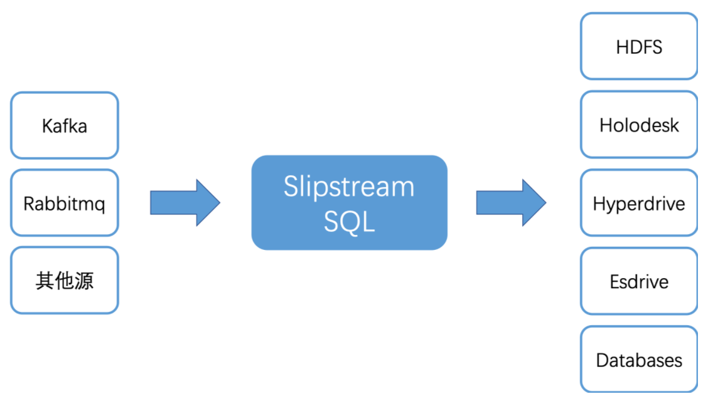
Slipstream架构
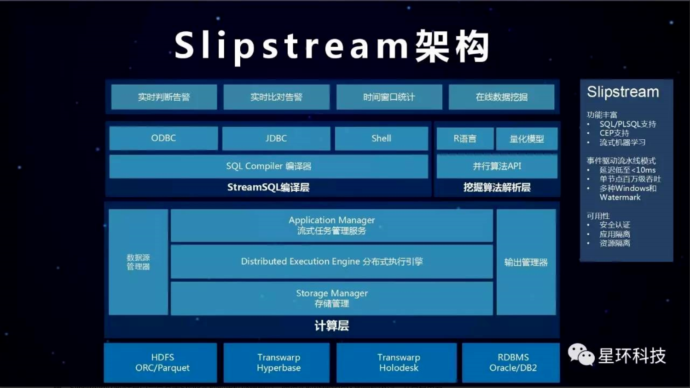
Slipstream支持从不同的源中获取实时的流数据, 计算处理之后输出到不同的文件系统
2、Slipstream核心概念
1、Stream
Stream是数据流，和Java以及其他编程语言中流的概念基本一致，不过Slipstream对这个概念做了更深层次的拓展。Stream分为两种：Input Stream 和 Derived Stream，直接用于接收数据源传来的数据称为Input Stream；对已有Stream进行变形得到的新的Stream称为Derived Stream
1、Input Stream
直接用于接收数据源传来的Stream称为Input Stream，Input Stream定义了如何从数据源读取数据
2、Derived Stream
一般的原始数据并不是我们最终要输出的数据，我们需要对原始数据进行过滤，提炼，计算，这样一个过程称之为对Stream的转化，Slipstream用 CVAS(CREATE VIEW AS SELECT)来描述对存在的Stream进行转化，但在真正使用过程中，为了避免跟普通表混淆，还是建议采用CSAS(CREATE STREAN AS SELECT)对已有的Stream进行变形，转化得到的新的Stream，我们称之为Derived Stream
3、Window Stream
有时候我们想知道一段时间的统计结果,比如10秒内某个网站的点击量,1分钟内某个商品的交易量,这个时候我们就可以用Window Stream来汇聚这一段时间的数据. Window Stream是Derive Stream的一种, 是对一个stream中在一定时间窗口(window)内的数据进行转化, 由此得到的Stream我们称之为Window Stream. 对一个Stream进行窗口变形需要两个重要的参数：Length和 Slide。 Length是窗口的持续时间，Slide则是执行窗口操作的间隔
2、StreamJob
是对一个或者多个Stream进行计算并将结果写进一张表的任务，是一个运行时概念
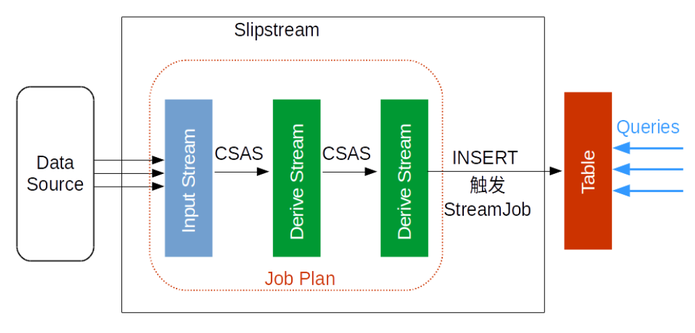
StreamJob是一个任务，任务的执行操作是需要我们人为去触发的，例如我们要做一个查询，要将结果插入结果表等，做了这些操作后就会触发StreamJob
3、Application
是一个或者多个业务逻辑相关的StreamJob的集合，有如下功能
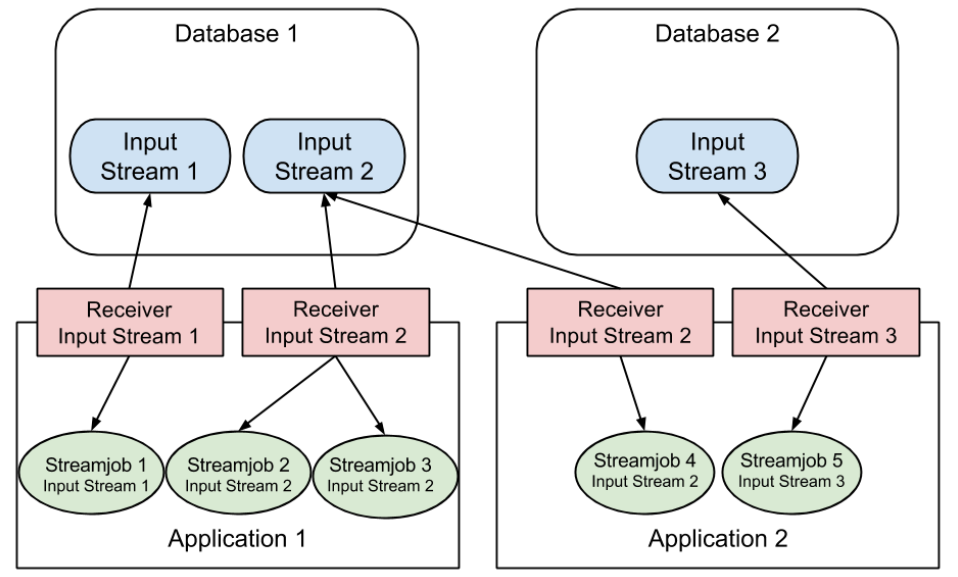
1、权限控制
这里是两个Application，Application1和Application2，user1只允许控制Application1，user2只允许控制Application2，user1可以在Application1下运行任何应用，但是无法查看或者停止Application2
2、全局配置
相同Application下的所有StreamJob共享APPPROPERTIES中的属性
3、资源共享
微批模式下, Application内使用同一个Input Stream的StreamJob共享一组receiver，Application 1中的Streamjob 2和Streamjob 3都使用Input Stream 2，它们共享Application 1中为Input Stream 2启动的Receiver
4、资源隔离
不同Application中的Streamjob若使用同一个Input Stream，则每个Application都为这个Input Stream启动一组receiver
Application 1和Application 2中都有Streamjob使用Input Stream 2，Application 1和Application 2各为Input Stream 2启动一组Receiver
4、Stream、StreamJob和Application的关系
Stream、StreamJob和Application的关系如下图所示
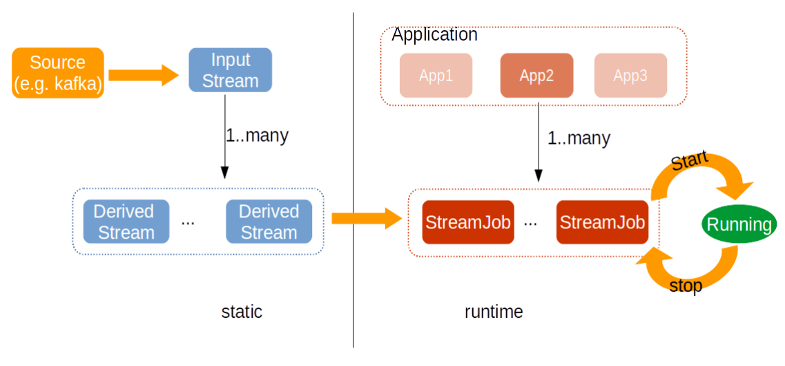
Input Stream和Deriver Stream都是数据流，这些是Stream的静态概念，仅仅描述了执行计划。
右侧是运行时概念，触发StreamJob才真正开始接收并处理数据
3、Slipstream普通SQL最大的区别
Slipstream与普通SQL最大的区别在于DML SQL(insert,delete,update,select )背景运行以及结果输出，这两大差别的根本原因是slipstream中SQL是持续不断运行的
1、DML SQL背景运行
普通SQL
对于普通SQL,当敲完SQL回车后用户需要等待SQL执行结束后得到结果或者得到出错信息。
Slipstream SQL
slipstream的DML语句会立即得到返回结果，标志着这个SQL是被正常调度，还是没有足够资源调度，如果这个SQL被正常调度，用户是无法从返回值判断该SQL的运行状态的。
2、结果输出
普通SQL
对于普通SQL，执行“select .. from …”查询后，查询结果将显式在用户命令行或者通过JDBC读取。
Slipstream SQL
在Slipstream中这种直接输出的方式被禁用了。用户必须显式地指定将结果输出到哪个地方。这也是由于Slipstream持续执行的原因，背景运行的SQL无法跟console直接交互。Slipstream的查询基本都会写成“insert into result_table select ….”的形式。
4、Slipstream的两种模型
Slipstream 支持两种模型：微批模型和事件驱动模型，事件驱动模型是Slipstream推荐的流处理模型
1、事件驱动模型
事件驱动模型更接近原生的流处理，一有数据进来就处理，就好比流水线上的零钱，来一个处理一个
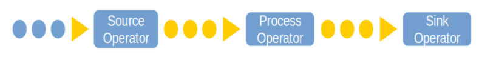
2、微批模型
顾名思义基于批处理的思想，将Input Stream按时间断分割成一个个小块处理，就像是给流水线增加一个缓冲，每隔一段时间去取一批零件加工
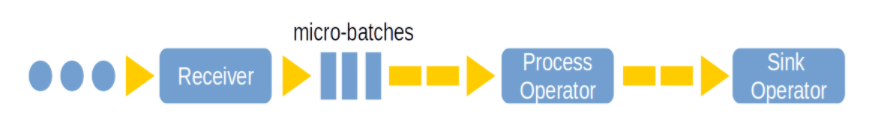
3、两种模型下的Stream
1、Input Stream
事件驱动模型
事件驱动模型中，当数据源处有数据进来就立即处理，来一条处理一条
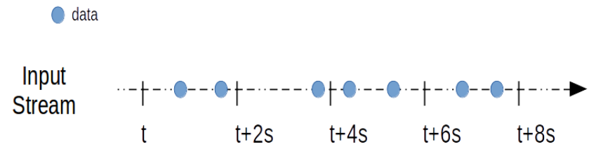
微批模型
微批模型下Input Stream被分割成一系列 小数据块（Batch） 来处理,Batch在获取数据时生成: 在一段单位时间内获取的数据都放进一个batch中，这段单位时间称为 Batch Interval，它的长度（Batch Duration）可以设置,如下图所示
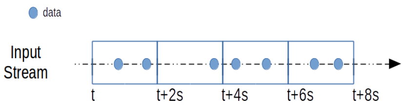
2、Derived Stream
事件驱动模型
事件驱动模型下, 每得到一条数据,就对其进行变形,得到Derived Stream:
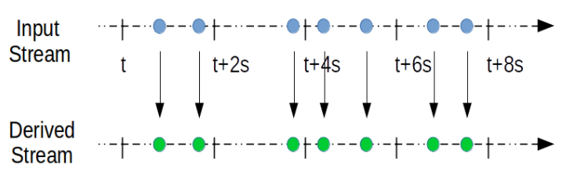
微批处理
而微批模型下,因为Input Stream是一系列batch,那么Stream的变形实际上是对batch计算得到新batch的过程:
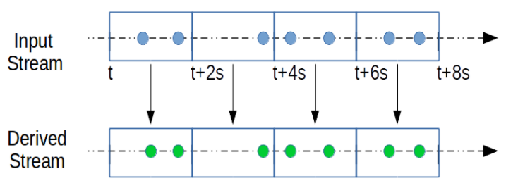
3、Window Stream
事件驱动模型
事件驱动模型下支持秒级的window stream
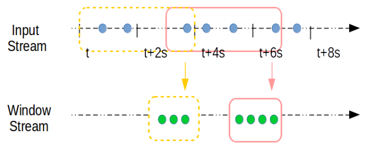
上图中窗口长度(Length)为4s,滑动间隔(Slide)为3s. 如此图中的第一个窗口为[t,t+4s),第二个窗口为[t+3s,t+7s),以此类推. 窗口的长度和滑动的间隔只要是1s的整数倍即可. 需要注意的是, 当t=0s,即Stream创建的初始时刻, 第一个窗口为[0,3s),比窗口长度会少1秒,这是因为Slide是执行窗口操作的间隔, Slide时间到了就会执行窗口计算
微批处理
微批模型下,窗口长度(Length)和滑动间隔(Slide)的长度都必须是batch duration的整数倍
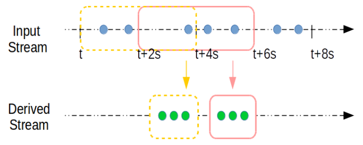
上图的窗口变形中，length是batch duration的2倍，slide是batch duration的1倍。如此图中的第一个窗口为[t,t+4s),第二个窗口为[t+2s,t+6s),以此类推. 与事件驱动模型相同的是,当t=0时,第一个窗口的长度等于Slide
3、优缺点
相较于微批模型，事件驱动模型具有一下特点
- 延迟更低，未批是秒级的延迟，而事件驱动模型的延迟是毫秒级别的
- 功能更全
- 支持会话窗口(Session Window)
- 复杂事件的处理(CEP)
- 更加完善的高可用(HA)
- StreamJon的Auto-failover